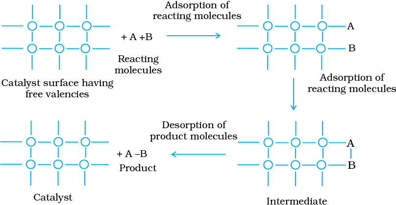

Potassium chlorate, when heated strongly decomposes slowly giving dioxygen. The decomposition occurs in the temperature range of
653-873K.
2KClO3 → 2KCl + 3O2
However, when a little of manganese dioxide is added, the decomposition takes place at a considerably lower temperature range, i.e., 473-633K and also at a much accelerated rate. The added manganese dioxide remains unchanged with respect to its mass and composition. In a similar manner, the rates of a number of chemical reactions can be altered by the mere presence of a foreign substance. The systematic study of the effect of various foreign substances on the rates of chemical reactions was first made by Berzelius, in 1835. He suggested the term catalyst for such substances.
Substances, which accelerate the rate of a chemical reaction and themselves remain chemically and quantitatively unchanged after the reaction, are known as catalysts, and the phenomenon is known as catalysis. You have already studied about catalysts and its functioning in Section 4.5.
Promoters and poisons
Promoters are substances that enhance the activity of a catalyst while poisons decrease the activity of a catalyst. For example, in Haber’s process for manufacture of ammonia, molybdenum acts as a promoter for iron which is used as a catalyst.
N2(g) + 3H2(g) 2NH3(g)
Catalysis can be broadly divided into two groups:
(a) Homogeneous catalysis
When the reactants and the catalyst are in the same phase (i.e., liquid or gas), the process is said to be homogeneous catalysis. The following are some of the examples of homogeneous catalysis:
(i) Oxidation of sulphur dioxide into sulphur trioxide with dioxygen in the presence of oxides of nitrogen as the catalyst in the lead chamber process.
2SO2(g) + O2(g) 2SO3(g)
The reactants, sulphur dioxide and oxygen, and the catalyst, nitric oxide, are all in the same phase.
(ii) Hydrolysis of methyl acetate is catalysed by H+ ions furnished by hydrochloric acid.
CH3COOCH3(l) + H2O(l) CH3COOH(aq) + CH3OH(aq)
Both the reactants and the catalyst are in the same phase.
(iii) Hydrolysis of sugar is catalysed by H+ ions furnished by sulphuric acid.
Both the reactants and the catalyst are in the same phase.
(b) Heterogeneous catalysis
The catalytic process in which the reactants and the catalyst are in different phases is known as heterogeneous catalysis. Some of the examples of heterogeneous catalysis are given below:
(i) Oxidation of sulphur dioxide into sulphur trioxide in the presence of Pt.
The reactant is in gaseous state while the catalyst is in the solid state.
(ii) Combination between dinitrogen and dihydrogen to form ammonia in the presence of finely divided iron in Haber’s process.
The reactants are in gaseous state while the catalyst is in the solid state.
(iii) Oxidation of ammonia into nitric oxide in the presence of platinum gauze in Ostwald’s process.
The reactants are in gaseous state while the catalyst is in the solid state.
(iv) Hydrogenation of vegetable oils in the presence of finely divided nickel as catalyst.
One of the reactants is in liquid state and the other in gaseous state while the catalyst is in the solid state.
This theory explains the mechanism of heterogeneous catalysis. The old theory, known as adsorption theory of catalysis, was that the reactants in gaseous state or in solutions, are adsorbed on the surface of the solid catalyst. The increase in concentration of the reactants on the surface increases the rate of reaction. Adsorption being an exothermic process, the heat of adsorption is utilised in enhancing the rate of the reaction.
The catalytic action can be explained in terms of the intermediate compound formation, the theory of which you have already studied in Section 4.5.1
The modern adsorption theory is the combination of intermediate compound formation theory and the old adsorption theory. The catalytic activity is localised on the surface of the catalyst. The mechanism involves five steps:
(i) Diffusion of reactants to the surface of the catalyst.
(ii) Adsorption of reactant molecules on the surface of the catalyst.
(iii) Occurrence of chemical reaction on the catalyst’s surface through formation of an intermediate (Fig. 5.3).
(iv) Desorption of reaction products from the catalyst surface, and thereby, making the surface available again for more reaction to occur.
(v) Diffusion of reaction products away from the catalyst’s surface. The surface of the catalyst unlike the inner part of the bulk, has free valencies which provide the seat for chemical forces of attraction. When a gas comes in contact with such a surface, its molecules are held up there due to loose chemical combination. If different molecules are adsorbed side by side, they may react with each other resulting in the formation of new molecules. Thus, formed molecules may evaporate leaving the surface for the fresh reactant molecules.
This theory explains why the catalyst remains unchanged in mass and chemical composition at the end of the reaction and is effective even in small quantities. It however, does not explain the action of catalytic promoters and catalytic poisons.

(a) Activity
The activity of a catalyst depends upon the strength of chemisorption to a large extent. The reactants must get adsorbed reasonably strongly on to the catalyst to become active. However, they must not get adsorbed so strongly that they are immobilised and other reactants are left with no space on the catalyst’s surface for adsorption. It has been found that for hydrogenation reaction, the catalytic activity increases from Group 5 to Group 11 metals with maximum activity being shown by groups 7-9 elements of the periodic table (Class XI, Unit 3).
(b) Selectivity
The selectivity of a catalyst is its ability to direct a reaction to yield a particular product selectively, when under the same reaction conditions many products are possible. Selectivity of different catalysts for same reactants is different. For example, starting with H2 and CO, and using different catalysts, we get different products.
Thus, it can be inferred that the action of a catalyst is highly selective in nature. As a result a substance which acts as a catalyst in one reaction may fail to catalyse another reaction.
The catalytic reaction that depends upon the pore structure of the catalyst and the size of the reactant and product molecules is called shape-selective catalysis. Zeolites are good shape-selective catalysts because of their honeycomb-like structures. They are microporous aluminosilicates with three dimensional network of silicates in which some silicon atoms are replaced by aluminium atoms giving Al–O–Si framework. The reactions taking place in zeolites depend upon the size and shape of reactant and product molecules as well as upon the pores and cavities of the zeolites. They are found in nature as well as synthesised for catalytic selectivity.
Zeolites are being very widely used as catalysts in petrochemical industries for cracking of hydrocarbons and isomerisation. An important zeolite catalyst used in the petroleum industry is ZSM-5. It converts alcohols directly into gasoline (petrol) by dehydrating them to give a mixture of hydrocarbons.
Enzymes are complex nitrogenous organic compounds which are produced by living plants and animals. They are actually protein molecules of high molecular mass and form colloidal solutions in water. They are very effective catalysts; catalyse numerous reactions, especially those connected with natural processes. Numerous reactions that occur in the bodies of animals and plants to maintain the life process are catalysed by enzymes. The enzymes are, thus, termed as biochemical catalysts and the phenomenon is known as biochemical catalysis.
Many enzymes have been obtained in pure crystalline state from living cells. However, the first enzyme was synthesised in the laboratory in 1969. The following are some of the examples of enzyme-catalysed reactions:
(i) Inversion of cane sugar: The invertase enzyme converts cane sugar into glucose and fructose.
(ii) Conversion of glucose into ethyl alcohol: The zymase enzyme converts glucose into ethyl alcohol and carbon dioxide.
(iii) Conversion of starch into maltose: The diastase enzyme converts starch into maltose.
(iv) Conversion of maltose into glucose: The maltase enzyme converts maltose into glucose.
(v) Decomposition of urea into ammonia and carbon dioxide: The enzyme urease catalyses this decomposition.
(vi) In stomach, the pepsin enzyme converts proteins into peptides while in intestine, the pancreatic trypsin converts proteins into amino acids by hydrolysis.
(vii) Conversion of milk into curd: It is an enzymatic reaction brought about by lacto bacilli enzyme present in curd.
Table 5.2 gives the summary of some important enzymatic reactions.
Table 5.2: Some Enzymatic Reactions
| Enzyme | Sourse |
Enzymatic reaction |
| Invertase |
Yeast | Sucrose → Glucose and fructose |
| Zymase |
Yeast | Glucose → Ethyl alcohol and carbon dioxide |
| Diastase |
Malt | Starch → Maltose |
| Maltase | Yeast | Maltose → Glucose |
| Urease |
Soyabean | Urea → Ammonia and carbon dioxide |
| Pepsin |
Stomach | Proteins → Amino acids |
Enzyme catalysis is unique in its efficiency and high degree of specificity. The following characteristics are exhibited by enzyme catalysts:
(i) Most highly efficient: One molecule of an enzyme may transform one million molecules of the reactant per minute.
(ii) Highly specific nature: Each enzyme is specific for a given reaction, i.e., one catalyst cannot catalyse more than one reaction. For example, the enzyme urease catalyses the hydrolysis of urea only. It does not catalyse hydrolysis of any other amide.
(iii) Highly active under optimum temperature: The rate of an enzyme reaction becomes maximum at a definite temperature, called the optimum temperature. On either side of the optimum temperature, the enzyme activity decreases. The optimum temperature range for enzymatic activity is 298-310K. Human body temperature being 310 K is suited for enzyme-catalysed reactions.
(iv) Highly active under optimum pH: The rate of an enzyme-catalysed reaction is maximum at a particular pH called optimum pH, which is between pH values 5-7.
(v) Increasing activity in presence of activators and co-enzymes: The enzymatic activity is increased in the presence of certain substances, known as co-enzymes. It has been observed that when a small non-protein (vitamin) is present along with an enzyme, the catalytic activity is enhanced considerably.
Activators are generally metal ions such as Na+, Mn2+, Co2+, Cu2+, etc. These metal ions, when weakly bonded to enzyme molecules, increase their catalytic activity. Amylase in presence of sodium chloride i.e., Na+ ions are catalytically very active.
(vi) Influence of inhibitors and poisons: Like ordinary catalysts, enzymes are also inhibited or poisoned by the presence of certain substances. The inhibitors or poisons interact with the active functional groups on the enzyme surface and often reduce or completely destroy the catalytic activity of the enzymes. The use of many drugs is related to their action as enzyme inhibitors in the body.
There are a number of cavities present on the surface of colloidal particles of enzymes. These cavities are of characteristic shape and possess active groups such as -NH2, -COOH, -SH, -OH, etc. These are actually the active centres on the surface of enzyme particles. The molecules of the reactant (substrate), which have complementary shape, fit into these cavities just like a key fits into a lock. On account of the presence of active groups, an activated complex is formed which then decomposes to yield the products.
Thus, the enzyme-catalysed reactions may be considered to proceed in two steps.
Step 1: Binding of enzyme to substrate to form an activated complex.
E + S → ES≠
Step 2: Decomposition of the activated complex to form product.
ES≠ → E + P
| Process | Catalyst |
|
1. Haber’s process for the manufacture of ammonia N2(g) + 3H2(g) → 2NH3(g) |
Finely divided iron, molybdenum as promoter; conditions: 200 bar pressure and 723-773K temp-erature. Now-a-days, a mixture of iron oxide, potassium oxide and alumina is used. |
|
2. Ostwald’s process for the manufacture of nitric acid. 4NH3(g) + 5O2(g) → 4NO(g) + 6H2O(g) 2NO(g) + O2(g) → 2NO2(g) 4NO2(g) + 2H2O(l) + O2(g) → 4HNO3(aq) |
Platinised asbestos; temperature 573K. |
|
3. Contact process for the manufacture of sulphuric acid. 2SO2(g) + O2(g) → 2SO3(g) SO3(g) + H2SO4(aq) → H2S2O7(l) oleum H2S2O7(l) + H2O(l) → 2H2SO4(aq) |
Platinised asbestos or vanadium pentoxide (V2O5); temperature 673-723K. |